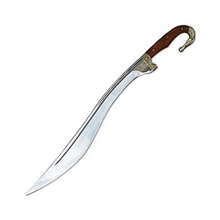

Armas Chinesas
Espada (Jian)
A espada reta chinesa, ou jian, é caracterizada pela sua delicadeza e graça. A espada chinesa, ou jian, é uma arma de uma mão com uma lâmina de tamanho médio e com dois gumes. Essa arma é o símbolo máximo de nobreza e habilidade marcial. Sua capacidade de encantar e fascinar o olhar humano se deve à sua técnica rebuscada. Essa arma surgiu na época em que os Zhou (1100-771 a.C.) governavam. As primeiras espadas chinesas eram feitas de bronze. Sua técnica se baseia nos movimentos circulares para a defesa; cortes e estocadas precisas para o ataque. Apesar de toda a admiração que seus movimentos graciosos suscitavam nas pessoas, o seu uso militar foi diminuindo. As lâminas, relativamente finas, podiam se quebrar facilmente nas batalhas. Além do mais, ela não era de fácil aprendizado, exigindo muito treino e anos de prática para se tornar realmente efetiva. Contudo, sua importância simbólica permaneceu na cultura chinesa. Carregar uma espada era um sinal de cultura e poder, ilustrando bem o ideal confuciano de unir a vida marcial com a vida intelectual. Por esse motivo a espada fez parte da indumentária dos oficiais da corte por vários séculos. A relação entre a esgrima e a caligrafia é digna de nota. A cultura chinesa vê na espada e na caligrafia um reflexo da capacidade humana de aprender. Em vários momentos da história chinesa, intelectuais chamavam a atenção para essa arma. Por exemplo, Sima Qian (145-86 a.C.), o mais conhecido historiador chinês, também é lembrado como um grande espadachim.
Lança (Qiang)
A lança pode variar muito de tamanho, podendo encontrar peças entre 1,5m até 5m. A lança é a arma que dominou as zonas de caça e os campos de batalha por milênios. Sua simplicidade e facilidade de produção só são inferiores ao bastão. Basicamente, a lança é um bastão com uma ponta afiada. O historiador, Dohrenwend, afirma que a lança foi a primeira arma realmente desenvolvida pelo ser humano. Essa ponta pode ser talhada na própria madeira ou feita com pedra ou metal. Isso dá um grande poder de combate a essa arma, pois ela passa a perfurar a pela e os músculos dos adversários. Entretanto, essa capacidade a mais não exclui todas as possibilidades técnicas que encontramos nos bastões. Assim, a lança se torna uma arma ainda mais poderosa, já que ela pode bater, bloquear, cortar e perfurar. Com essas características, a lança se tornou a arma mais proeminente nas batalhas antigas. Sua capacidade de manter o adversário longe e baixo custo de produção a tornou essencial para qualquer infantaria. Além disso, quando combinada com uma formação de soldados bem treinados, era possível até mesmo enfrentar uma investida de cavalaria. Na China antiga, encontramos uma grande variedade de modelos de lanças. A mais comum é a lança “flor de ameixa”, uma lança que era um pouco maior do que o seu usuário e possuía uma crina de cavalo perto da ponta. Seu tamanho reduzido a tornava útil para ser usada como arma de defesa pessoal (as lança militares podiam chegar a ter quatro metros de comprimento). Já a crina evitaria que o sangue escorresse pelo cabo da arma (o que atrapalharia seu manuseio).
Armas Romanas
Púgio
Púgio ou pugião era uma adaga, um punhal ou faca de dois gumes e lâmina larga triangular
ou
foliforme,
cujo
nome, tanto em grego como em latim (ambos desinências das respectivas palavras para
"punho")[1],
denota
a
pequenez do artefato e a maneira de segurá-lo na mão.[2]
De origem celtibera, chegou a ser utilizada como segunda arma pelos legionários.
A lâmina, geralmente de bronze ou ferro, teria cerca de 15 a 28 centímetros de
comprimento e
5
centímetros
de largura.[4]
O punho, variadamente ornado ou enriquecido, às vezes feito de madeira dura preta do
terebinto
sírio[1],
podia ter entre 10 e 13 centímetros de comprimento. Pesava cerca de 450 a 700 gramas em
média.
O pomo (então chamado capulus) foi sofrendo alterações desde o século I até ao II.
Originalmente
era
esférico, mas foi sendo substituído por pomos mais bulbosos e trapezoidais.[5] Por volta
do
século
III,
quando o púgio conhece um novo surto de popularidade, os pomos ganham um formato de
crescente,
"língua
de
carpa" ou "em antenas", como aconteceu aos gládios, durante o mesmo período histórico.
[4]
Um golpe com o gume, mesmo que desferido com força, raramente mata.... Por outro lado,
as
punhaladas,
basta
que penetrem duas polegadas, para que sejam fatais... O corpo está a coberto, quando a
estocada
é
desferida,
e o adversário leva com a ponta antes de ver a espada sequer. Este era o método de
combate
primacial
empregue pelos Romanos...
Falcata
A falcata é uma espada céltica usada na Hispânia pré-romana (a Península Ibérica), é similar à espada grega kopis e à nepalesa kukri. As espadas no estilo da falcata foram derivadas de facas em forma de foice usadas na Idade do Ferro. Isto também explica os usos religiosos da arma. Acredita-se que a espada tenha sido introduzida na Península Ibérica pela primeira vez pelos celtas que espalharam a tecnologia do ferro pelo continente. Sua origem é apenas paralela à grega Kopis, e não um derivado desta arma. A falcata tem uma lâmina afiada que se curva para a frente em direção á ponta da própria arma. O gume é côncavo na parte mais baixa da espada, porém convexo no topo. Esta estrutura e consequente distribuição do peso mais para a ponta da lâmina permitem à falcata distribuir golpes com a energia de um machado, mantendo, no entanto, o gume cortante característico de uma espada. O cabo assume uma forma semelhante a um gancho, tendo no punho a forma de um cavalo ou de um pássaro. A falcata possui uma corrente fina que liga a ponta do cabo à seção superior. Apesar da maioria das falcatas serem de um gume, falcatas de dois gumes já foram encontradas.

Armas Japonesas
Katana
Entre as espadas japonesas, a mais famosa do mundo é provavelmente a katana, a arma
preferida
dos
samurais.
Uma katana é um sabre curvo com uma lâmina bastante longa (mais de 60 cm) e fina e com
uma
única
aresta. Era
usada deslizando pela cintura, cortando-a.
A katana é uma das armas japonesas mais conhecidas.
Usamos katanas para várias situações: arma de tamanho (usada por sua nitidez), arma de
empuxo
(usada
por sua
ponta) ou arma cerimonial (simbólica). Durante o período Muromachi, sua produção foi a
mais
importante e
muitos ferreiros famosos ficaram conhecidos por suas lendárias katanas.
Existe um vocabulário inteiro em torno da katana: Entre os guerreiros mais famosos, você
pode
reconhecer os
nomes de Masamune, Kotetsu, Kunimitsu ou Muramasa. Além disso, a katana é uma arma
presente
em
muitas obras
contemporâneas, ligadas ao folclore japonês, como em Kill Bill, Ruroni Kenshin ou The
Legend
of
Musashi!

Shuriken
Os ninjas são guerreiros das sombras que fascinam o mundo repetidamente com sua arte de
luta, o
ninjutsu.
Esses espiões profissionais poderiam usar toda uma parafernália de arremessos ou armas
de
fogo.
Primeiro, o Yumi é um arco japonês. Não era usado apenas pelos ninjas, mas representava
uma
vantagem
definitiva para o guerreiro das sombras. Era menos usado que o Kunai, uma pequena adaga
em
forma
de ponta
que era tanto uma ferramenta quanto uma arma. Os ninjas também podiam usar uma espada
ninja,
mais curta e
mais manejável que uma katana.
Entre as muitas armas de tiro dos ninjas, a mais famosa é, sem dúvida, a Shuriken, uma
ferramenta de metal
que pode ser jogada em oponentes e coberta de veneno. Entre as formas de Shuriken, a
estrela
é
chamada de
Shaken. Outra arma ninja eficaz foi o Senbon, um conjunto de agulhas de metal que você
pode
jogar e injetar
veneno!
A forma mais comum da Shuriken é a estrela.
As armas dos ninjas foram notavelmente popularizadas pelo mangá Naruto e, mesmo que os
ninjas
reais não
soubessem fazer mágica, elas eram muito eficazes!
Kama
Kama (鎌 ou かま) é um tipo de ferramenta tradicional de agricultura proveniente de
Okinawa, no
Japão,
semelhante a uma foice, usada para ceifar colheitas e também utilizada como arma.
Antes de ser usada nas artes marciais, a kama era usada na China, Japão e Filipinas nas
colheitas,
sobretudo
de arroz. Também tem sido utilizada em artes marciais chinesas e coreanas.
Uma variação ou evolução da kama é a kusarigama, que consiste na combinação de uma ou
até
duas
kamas
a uma
corrente.